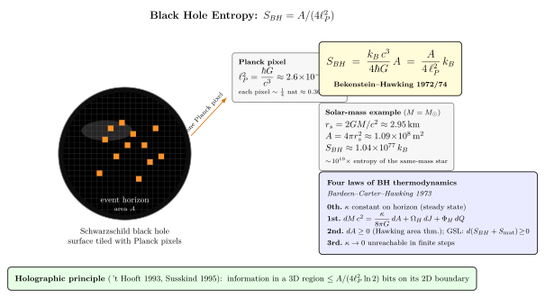

为什么黑洞熵正比于面积?
上一节我们发现了一件惊人的事: 黑洞不是真正的"黑". 它以 Hawking 温度 $T_H = \hbar\kappa/(2\pi c k_B)$ 辐射. 对一个太阳质量的黑洞, $T_H\approx 6.2\times 10^{-8}$ K — 比 CMB 还冷, 但毕竟不是零. 既然有温度, 热力学就开始问一些追命的问题: 黑洞有没有熵? 如果有, 多少? 如果给黑洞扔一杯热咖啡, 那杯咖啡的熵到哪儿去了? 热力学第二定律还成不成立?
这些问题的答案是 1972-1974 这三年敲定的, 主角有四位: 一个是当时刚做完博士的 Jacob Bekenstein, 他从一个看上去几乎是哲学的论证猜了个具体公式; 一个是已经名满天下的 Stephen Hawking, 起初激烈反对、后来用半经典量子场论自己把它证了出来; 还有 James Bardeen 和 Brandon Carter, 与 Hawking 合作把整套理论整理成漂亮的"四定律"形式. 这一节我们沿着他们的脚印走, 把"黑洞熵 = 面积/4" 这个看上去怪诞的结论, 从一个第一性论证推到一个具体数字.
一、Bekenstein 的猜想: 黑洞必须有熵
1972 年, Bekenstein 还是 Princeton 的博士生 (导师是 John Wheeler). 他考虑一个似乎纯粹是悖论游戏的设定: 把一杯熵为 $\Delta S$ 的热咖啡扔进黑洞. 从外面看, 系统的可观测自由度只剩下黑洞的三个数 — 质量 $M$, 角动量 $J$, 电荷 $Q$ ("无毛定理", 第 17 节). 杯子的熵似乎彻底丢了.
这就违反热力学第二定律 — 总熵只能增不能减. Bekenstein 拒绝接受. 他提出: 黑洞本身必须携带熵 $S_{BH}$, 而且它必须 $\geq$ 被吞物体损失的熵; 否则你可以反复用黑洞洗白熵, 造一个第二定律永动机.
下一步: $S_{BH}$ 应该是哪个量的函数? Bekenstein 注意到 Hawking 1971 已经证过一条几何学定理: 在经典 GR 里, 任何黑洞过程都满足 $\mathrm{d}A_{\rm horizon}\geq 0$. 视界面积只增不减 — 这看起来太像热力学的 $\mathrm{d}S\geq 0$ 了, 不可能是巧合. Bekenstein 大胆假设: $S_{BH}$ 正比于面积 $A$, 比例系数靠量纲分析 — 唯一的天然面积是 Planck 面积 $\ell_P^2 = \hbar G/c^3 \approx 2.61\times 10^{-70}\,\mathrm{m}^2$. 于是
$$ S_{BH} \;=\; \eta\,\frac{k_B\,c^3}{\hbar G}\,A \;=\; \eta\,\frac{k_B\,A}{\ell_P^2}, \tag{1} $$
其中 $\eta$ 是一个 $O(1)$ 的无量纲常数. Bekenstein 当时凭半经典论证猜 $\eta\sim\ln 2/(8\pi)$ (基于"一个比特对应一个面积量子"的思想). Hawking 起初激烈反对: 公式 (1) 暗示黑洞有温度, 而经典黑洞应该是零温. 1974 年 Hawking 自己用弯曲时空 QFT 算出 Hawking 辐射, 反过来证明了 Bekenstein 是对的, 并把系数 $\eta$ 钉死: $\eta = 1/4$.
二、从第一定律读出 1/4: 一个具体推导
固定 $\eta$ 的论证其实非常简洁, 它把 Hawking 温度直接喂回热力学. 对一个 Schwarzschild 黑洞, $r_s = 2GM/c^2$, 视界面积 $A = 4\pi r_s^2 = 16\pi G^2 M^2/c^4$. 所以 $A$ 与 $M$ 一一对应, 我们可以把所有热力学量写成 $M$ 的函数.
表面引力 (上一节) $\kappa = c^4/(4GM)$. Hawking 温度
$$ T_H \;=\; \frac{\hbar\kappa}{2\pi c k_B} \;=\; \frac{\hbar c^3}{8\pi G M k_B}. $$
现在用第一定律 $\mathrm{d}E = T\,\mathrm{d}S$ (对纯 Schwarzschild 没有 $\Omega\,\mathrm{d}J$ 和 $\Phi\,\mathrm{d}Q$ 项), 这里 $E = Mc^2$ 是黑洞总能量. 所以
$$ \mathrm{d}S_{BH} \;=\; \frac{\mathrm{d}(Mc^2)}{T_H} \;=\; \frac{c^2\,\mathrm{d}M}{\hbar c^3/(8\pi G M k_B)} \;=\; \frac{8\pi G M k_B}{\hbar c}\,\mathrm{d}M. $$
积分 (从 $M = 0$ 到 $M$, 取 $S_{BH}=0$ 在 $M=0$):
$$ S_{BH} \;=\; \frac{4\pi G M^2 k_B}{\hbar c} \;=\; \frac{k_B c^3}{4\hbar G}\cdot 16\pi\frac{G^2 M^2}{c^4} \;=\; \frac{k_B c^3}{4\hbar G}\,A. \tag{2} $$
这就是 Bekenstein-Hawking 公式. 系数恰恰是 $1/4$, 不是 $1/(8\pi)$ 也不是 $\ln 2/8\pi$ — 是热力学第一定律加 Hawking 1974 算出的具体温度强行钉死的. 写成 Planck 单位
$$ S_{BH} \;=\; \frac{A}{4\ell_P^2}\,k_B, \qquad \ell_P^2 \equiv \frac{\hbar G}{c^3} \approx 2.61\times 10^{-70}\,\mathrm{m}^2. $$
这个公式的几何叙述非常震撼: 把视界表面切成一格一格的 Planck 面积小方块, 每一格贡献 $1/4$ 个 nat (即 $\sim 1/4 \cdot \log_2 e$ 比特). 黑洞的熵不是它内部体积的某个量, 而是它边界的某个量. 我们日常的所有热力学体系 (理想气体, 黑体辐射, 玻色凝聚体...) 熵都正比于体积. 黑洞反过来 — 这种"reduced dimensionality"是后面全息原理的物理根. 我们一会回到它.
三、代一个具体数: 太阳质量黑洞
把 $M = M_\odot = 1.989\times 10^{30}$ kg 代进 (2). 先算 Schwarzschild 半径
$$ r_s \;=\; \frac{2 G M_\odot}{c^2} \;\approx\; \frac{2\cdot 6.674\times 10^{-11}\cdot 1.989\times 10^{30}}{(3\times 10^8)^2} \;\approx\; 2.95\,\mathrm{km}. $$
视界面积 $A = 4\pi r_s^2 \approx 4\pi\cdot(2.95\times 10^3)^2\,\mathrm{m}^2 \approx 1.09\times 10^8\,\mathrm{m}^2$ — 大概等于 100 平方公里, 约一个中等城市的面积. 熵
$$ S_{BH} \;=\; \frac{A}{4\ell_P^2}\,k_B \;\approx\; \frac{1.09\times 10^8}{4\cdot 2.61\times 10^{-70}}\,k_B \;\approx\; 1.04\times 10^{77}\,k_B. $$
这个数字值得停下来感受一下. $10^{77}$ 比特的信息存储能力是什么意思? 比较: 一个正常恒星 (我们的太阳) 的熵, 用 Sackur-Tetrode 公式或恒星结构估算, 约 $S_\odot\sim 10^{58}\,k_B$. 也就是说同样的 1 个太阳质量, 把它揉成一个黑洞, 熵增加了 19 个数量级. 把整个银河系所有恒星都压成黑洞, 它们的熵之和还远不及银河系中心那个 $4\times 10^6 M_\odot$ 单一黑洞 (Sgr A*) 的熵 ($\sim 10^{91}\,k_B$). 整个可观测宇宙的"普通熵" (CMB 光子, 中微子...) 约 $10^{89}\,k_B$, 而所有黑洞合起来的熵 $\sim 10^{104}\,k_B$ — 宇宙绝大部分的熵都装在黑洞里.
这个结论彻底改写了我们对"宇宙学熵"的理解. 1900 年 Boltzmann 算理想气体的熵, 1972 年 Bekenstein 发现真正的熵宝藏在视界上.

四、四定律: 黑洞热力学的字典
Bardeen, Carter, Hawking 1973 把黑洞经典力学和热力学之间的对应整理成漂亮的四条定律. 它们不是类比 — 加上 Hawking 1974 的辐射, 它们就是真热力学定律.
第零定律: 处于稳态的黑洞, 视界上的表面引力 $\kappa$ 是常数 (与位置无关). 类比: 普通系统里热平衡时温度处处相等. 对 Schwarzschild $\kappa = c^4/(4GM)$ 显然处处相同; 对 Kerr 黑洞, 即便视界是椭球面、不同地方"长得不一样", $\kappa$ 仍处处相等 — 这是一个非平凡的几何定理.
第一定律: 准静态过程中
$$ \mathrm{d}M c^2 \;=\; \frac{\kappa}{8\pi G}\,\mathrm{d}A \;+\; \Omega_H\,\mathrm{d}J \;+\; \Phi_H\,\mathrm{d}Q. \tag{3} $$
类比标准热力学的 $\mathrm{d}E = T\,\mathrm{d}S - p\,\mathrm{d}V + \mu\,\mathrm{d}N$. $\Omega_H$ 是视界角速度 (Kerr 黑洞拖着附近时空一起转), $\Phi_H$ 是视界电势. 公式 (3) 与 (2) 一致: 把 $T\,\mathrm{d}S = (\hbar\kappa/2\pi c k_B)\cdot\mathrm{d}(Ak_B c^3/4\hbar G) = (\kappa/8\pi G)\,\mathrm{d}A\cdot c^2/c^2$, 系数对得上.
第二定律: 任何经典过程中, $\mathrm{d}A_{\rm total}\geq 0$. 这是 Hawking 1971 的面积定理, 严格的几何定理 (基于零曲面的聚焦方程 + 弱能量条件). 它的物理含义: 两个黑洞合并 (LIGO 看到的事), 末态视界面积一定不小于初态两个面积之和. 加进 Hawking 辐射, 严格的经典第二定律破了 — 黑洞蒸发时 $\mathrm{d}A \lt 0$. 但 Bekenstein 提出的广义第二定律 (Generalized Second Law, GSL): $\mathrm{d}(S_{\rm matter} + S_{BH})\geq 0$, 即外面世界熵 + 黑洞熵之和不降. GSL 至今没被反例证伪, 是当代量子引力的核心约束.
第三定律: 不可能通过有限步骤把 $\kappa$ 减到 $0$. 类比 Nernst: 不能在有限步骤把温度减到绝对零. 物理含义: 极端 Kerr 黑洞 ($J = GM^2/c$, $\kappa = 0$) 是一个边界, 你可以无限逼近但不能到达. 这与第一定律一起, 解释了为什么不能通过累积扔进角动量造一个"裸奇点" — 这就是 Penrose 1969 的宇宙审查猜想的热力学版本.
四定律完美对应:
$$ T \leftrightarrow \frac{\hbar\kappa}{2\pi c k_B},\qquad S \leftrightarrow \frac{k_B c^3 A}{4\hbar G}, \qquad \mathrm{d}E \leftrightarrow \mathrm{d}(Mc^2). $$
它告诉我们: 黑洞不是某种"破例"的客体. 它就是一个温度 $T_H$、熵 $S_{BH}$、化学势 $\Omega_H, \Phi_H$ 的普通热力学系统, 只是温度反比于质量 (热容为负, 这意味着黑洞越大越冷, 越冷蒸发越慢, 这是"恒星黑洞稳定但 Hawking 辐射可观测时间远长于宇宙年龄"的根源).
五、全息原理: 信息装在边界上
面积律 (2) 看似是一个具体技术结果, 但 't Hooft 1993 和 Susskind 1995 把它升级成基础物理的一条普适原理:
一个引力体系 $V$ 里的全部物理信息, 等价于其边界 $\partial V$ 上的一个 (无引力的) 量子场论, 信息密度 $\leq$ 1 bit/(4 Planck 面积).
这条断言比黑洞熵公式强得多. 它说: 你不能在一立方厘米的盒子里装下任意多的比特 — 装的越多, 盒子里的能量越大, 当能量超过给定边界面积对应的黑洞质量时, 盒子坍缩为黑洞, 它的熵就是边界面积/4. 所以有限边界能装的最大比特数被外部边界面积 $A$ 给死: $N_{\max}\sim A/(4\ell_P^2 \ln 2)$. 一立方米的真空 $A\sim 10$ m², 最多装 $\sim 10^{69}$ bit, 远超我们对"信息密度"任何日常想象但远低于"无穷"。这条 $A/4$ 的硬墙是引力 + 量子力学一起划出来的物质性墙.
1997 年 Maldacena 给出了第一个具体的全息实例: AdS/CFT 对应. 5 维 anti-de Sitter 时空里的弦理论 = 4 维边界上的 $\mathcal{N}=4$ 超对称 Yang-Mills 理论. 这两个看上去维度都不同、内容也不一样的理论被证明是同一个物理. 这是 21 世纪基础物理的革命之一, 它让我们认真考虑: 引力可能是一种涌现现象, 真正的微观自由度生活在二维表面上. 正在进行的工作 (从 ER=EPR 到量子纠错码, 到引力对偶到张量网络) 大都从这条线发芽.
更深一层: 黑洞信息悖论. 信息扔进黑洞, 蒸发后变成热辐射, 这个过程经典看是不可逆的. 但量子力学要求酉性 (信息守恒). 矛盾. 1976 Hawking 站信息丢了一队, 2004 他改口认输 (赌输了一盘 Penrose 的赌局). 现代答案 (Page curve, 2019 Penington / Almheiri 等的quantum extremal surface 计算) 表明信息确实保留, 它通过非局域的纠缠通道从黑洞内部"漏"到 Hawking 辐射里, 最终通过岛屿公式 $S(R) = \min\,\text{ext}\big[\,A(\partial I)/4G + S_{\rm matter}(R\cup I)\,\big]$ 重现 unitarity. 这个公式骨子里仍然是一个面积!
面积律的统治范围越来越宽: 黑洞熵, 全息屏熵, 量子纠缠熵 (Ryu-Takayanagi), 岛屿熵 — 全都正比于某个相关曲面的面积. 这或许是量子引力理论最坚实的一个结构性事实.
小结
这一节我们把上一节得到的 Hawking 温度 $T_H = \hbar\kappa/(2\pi c k_B)$ 喂回热力学第一定律 $\mathrm{d}M c^2 = T\,\mathrm{d}S$, 直接积分得到 Bekenstein-Hawking 公式 $S_{BH} = k_B c^3 A/(4\hbar G) = A/(4\ell_P^2)\cdot k_B$. 这件事的最不可思议之处是它是面积比例而非体积 — 我们日常的所有热力学体系熵都正比于体积. 代具体数: $M = M_\odot\Rightarrow r_s\approx 2.95$ km, $A\approx 1.09\times 10^8\,\mathrm{m}^2$, $S_{BH}\approx 1.04\times 10^{77}\,k_B$ — 比同质量恒星熵高 19 个数量级. Bardeen-Carter-Hawking 1973 把整套结构整理成四定律: 0th 视界上 $\kappa$ 处处相等, 1st $\mathrm{d}M c^2 = (\kappa/8\pi G)\mathrm{d}A + \Omega_H\mathrm{d}J + \Phi_H\mathrm{d}Q$, 2nd 经典 $\mathrm{d}A\geq 0$ (Hawking 面积定理) 推广到 GSL $\mathrm{d}(S_{\rm matter}+S_{BH})\geq 0$, 3rd $\kappa\to 0$ 不可达 (宇宙审查的热力学版). 这条定律链的最深刻后果是 't Hooft 1993 / Susskind 1995 的全息原理 — 一个三维区域的全部信息可以装在它二维边界上, 密度 $1/(4\ell_P^2)$ 比特/面积. Maldacena 1997 的 AdS/CFT 给出第一个具体实现. 黑洞信息悖论的现代解决 (Page curve, 岛屿公式) 仍然是一个面积律. 下一节我们暂别黑洞, 进入第 5 部分宇宙学, 看 Friedmann 方程怎么把 Einstein 方程在均匀各向同性假设下写出整个宇宙的演化方程.
▲